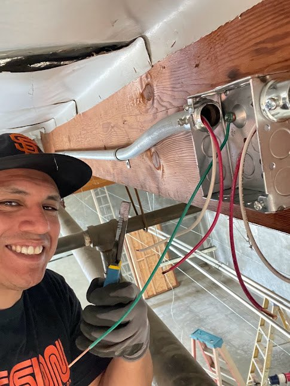

HANDS-ON TECHNICAL PORTFOLIO
A practical mind.
A hands-on approach.
I'm Eduardo Ruiz. I'm a Computer Engineering student at San Francisco State University with experience in IT support, electronics repair, network cabling, electrical work, and customer service.
Explore my work ↘
PHONE REPAIR+LOW VOLTAGE+ELECTRICAL WORK+ELECTRONICS
01 / PROJECT GALLERY
The work, up close.
From wiring in the field to circuits on the bench. Explore photographs from my hands-on work and lab projects.